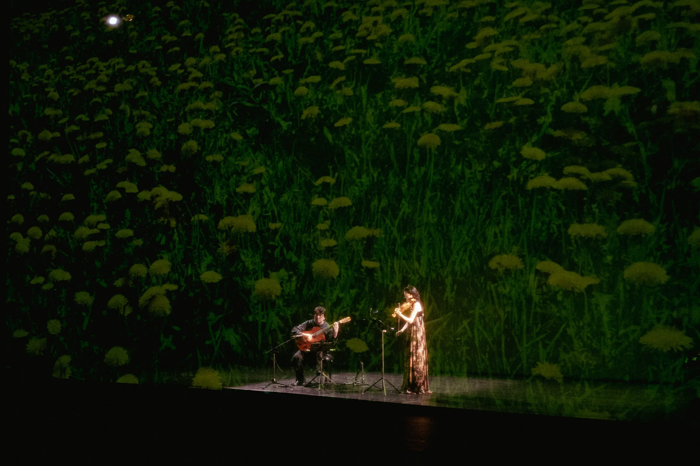
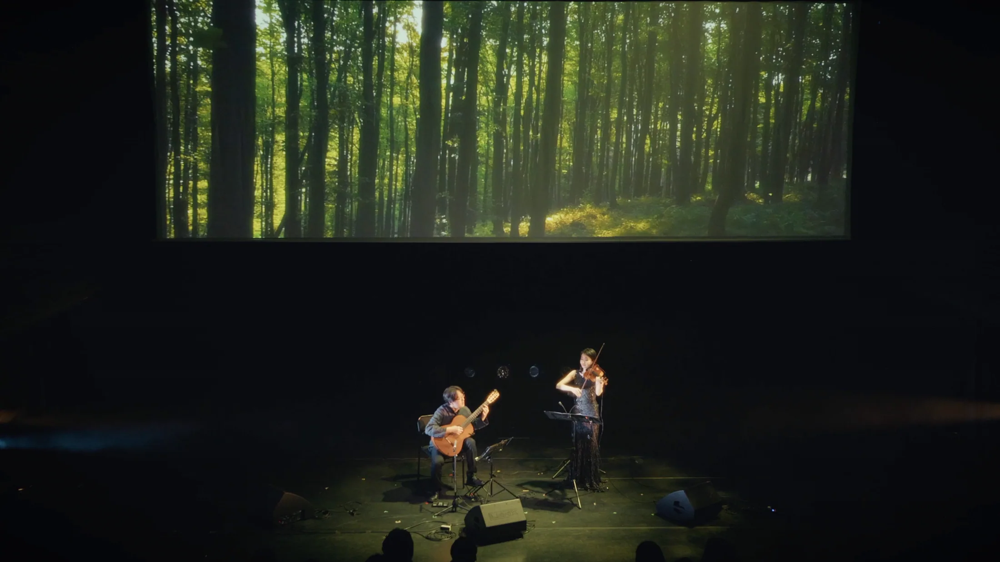
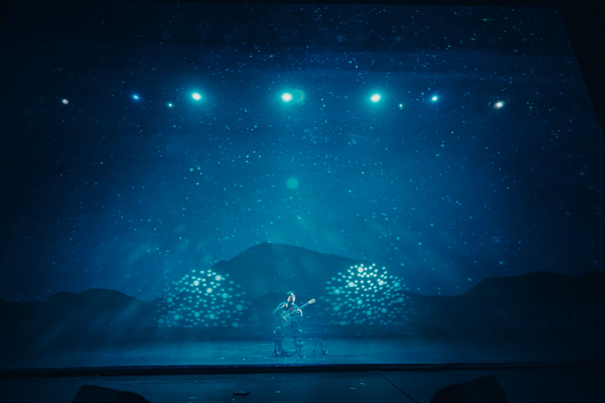
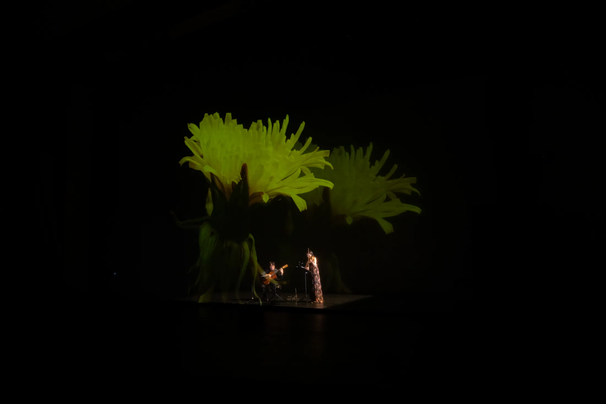
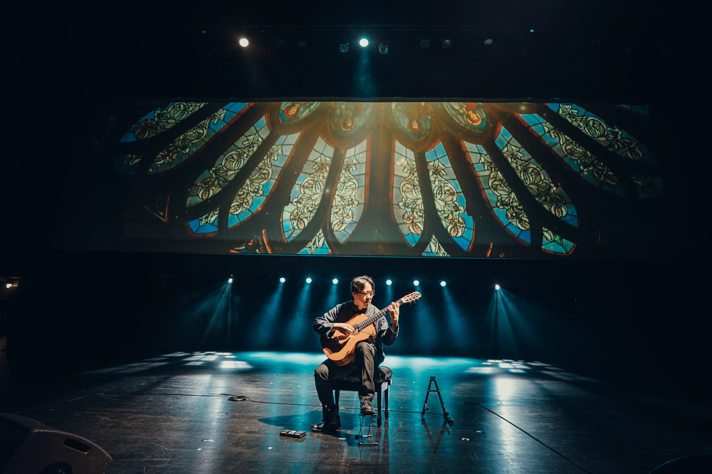
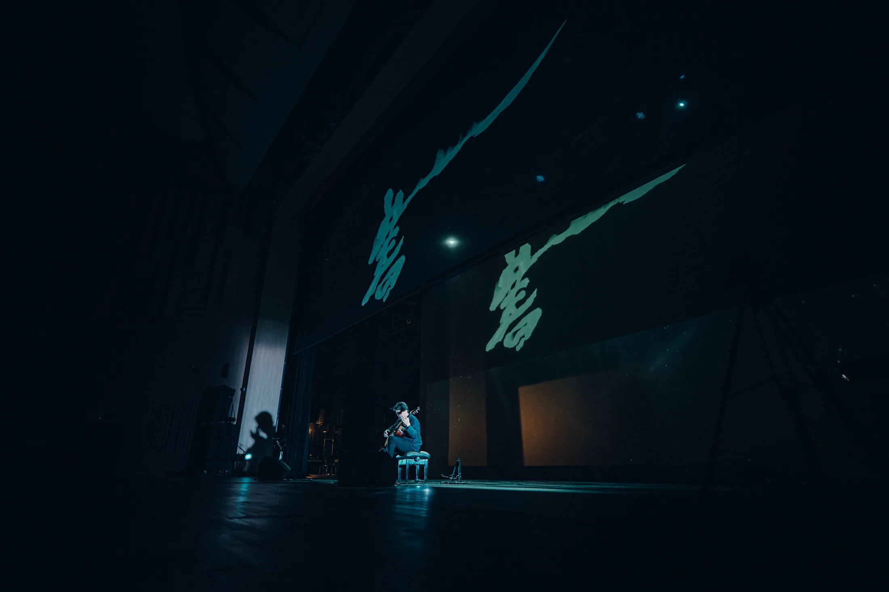
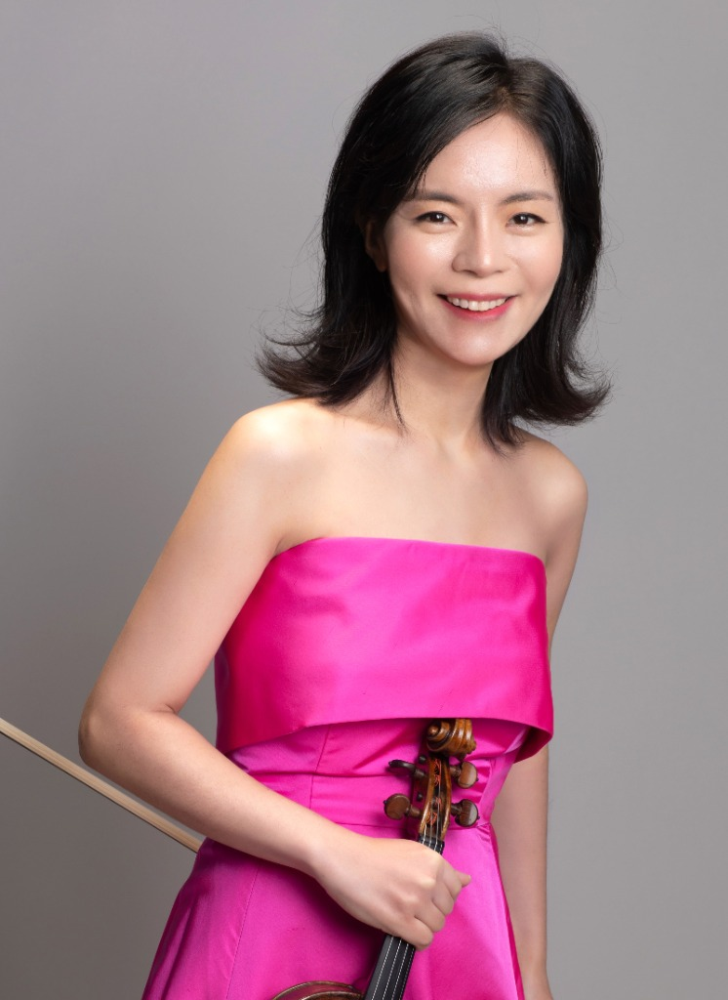

I · Forest
숲으로 들어가다
작은 소리들이 차곡차곡 쌓이며 관객의 호흡을 늦추고, 공연은 고요한 감사의 풍경에서 시작되었습니다.

ACC 2026 · Performance Archive
소리와 빛, 이미지와 향이 만나
마음 깊은 곳에 만든 회복의 풍경.
Concert statement
자연에서 시작된 음악은 삶과 기억, 관계와 회복의 풍경으로 이어졌습니다.
작곡가이자 기타리스트 최인이 써 내려간 선율은 프로젝션 매핑과 다차원 공간음향을 만나 하나의 깊은 풍경으로 확장되었습니다. 바이올린과 기타, 피리와 기타가 빚어낸 창작 이중주는 동양과 서양, 전통과 현대의 경계를 천천히 가로질렀습니다.
대형 스크린 위로 숲과 바다, 서예와 한국화가 살아 움직이고 장면을 따라 번지는 향은 관객을 음악 한가운데로 이끌었습니다. 이 밤은 지친 일상을 잠시 내려놓는 공동의 쉼이자 다시 나아가기 위한 작은 시작이었습니다.

Three movements
공연 사진을 나열하기보다 무대의 감각이 바뀌는 세 순간을 따라, 치유의 밤이 흘러간 방향을 기록했습니다.

작은 소리들이 차곡차곡 쌓이며 관객의 호흡을 늦추고, 공연은 고요한 감사의 풍경에서 시작되었습니다.

바다와 산, 돌과 바람, 물의 기억을 지나 한 사람의 조용한 기도로 이어졌습니다.

한 송이 민들레에서 시작한 소망이 서로의 마음을 만나 더 먼 곳으로 번져갔습니다.
Performance film
공연의 소리와 빛이 만난 장면을 영상으로 다시 만나보세요.
Concert programme
숲에서 바다로, 길에서 기도로, 다시 세상으로. 자연과 삶에서 출발한 열 곡이 하나의 서사를 만들었습니다.



Artists




Archive materials
작품 해설과 참여진, 제작 이야기는 온라인 프로그램북에서 확인할 수 있습니다. 공연 소개와 기본 정보도 함께 기록해 두었습니다.
Creative team
Press coverage
공연을 앞두고 소리와 빛, 향이 결합된 융복합 무대와 그 안에 담긴 회복의 메시지가 소개되었습니다.